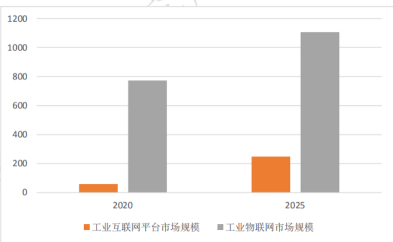
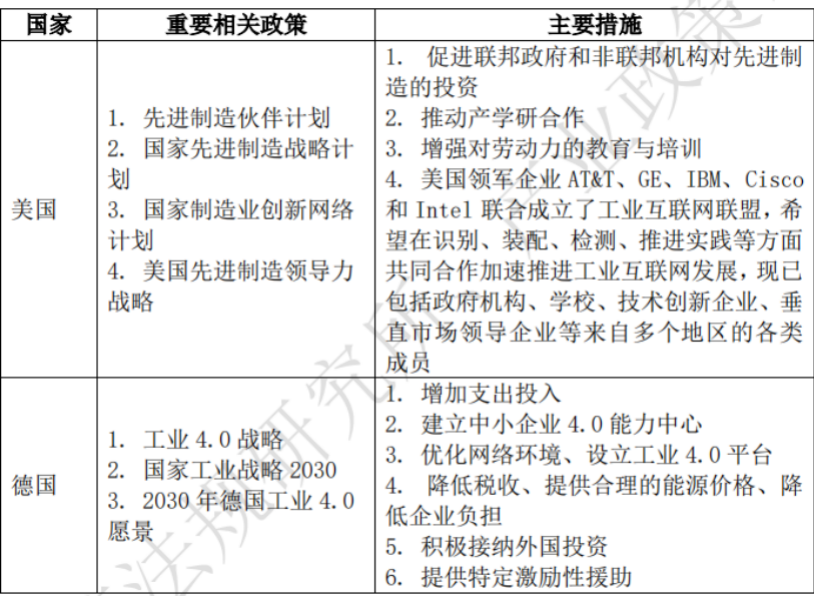

全球工业互联网正处于快速发展阶段，相关市场规模均具有较高 的增长率。美国在该领域也具有较强的领先实力，制造业强国的德国发展紧随其后。
据 MarketsAndMarkets 统计，全球工业互联网平台市场规模在 2018 年约为 33 亿美元，按其预估的 33.4%年均复合增长率计算，工 业互联网平台市场在 2020 年预计达到 58.73 亿美元，在 2025 年预计 达到 248.09 亿美元。全球工业物联网预计在 2020 年达到 773 亿美元 的市场规模，按预估的 7.4%年均复合增长率计算，该市场规模在 2025 年将达到 1106 亿美元。在 2019 年，亚太地区在全球占据最多的工业 物联网市场份额，其次是北美地区和欧洲地区。
工业互联网规模概算（亿美元）
先进制造业涉及大数据分析、先进传感和控制技术、网络信息安全等众多与工业互联网相关的技术，工业互联网是先进制造业发展的一个重要领域，因此，各国将促进工业互联网的发展政策糅合到促进先进制造业的发展规划中，推进发展先进制造业为发展工业互联网提供良好的基础与推动力。各国通过顶层设计规划国家先进制造发展战略，并采取提供资金支持、促进多方合作等方式发展先进制造业。
典型国家发展工业互联网的促进政策
